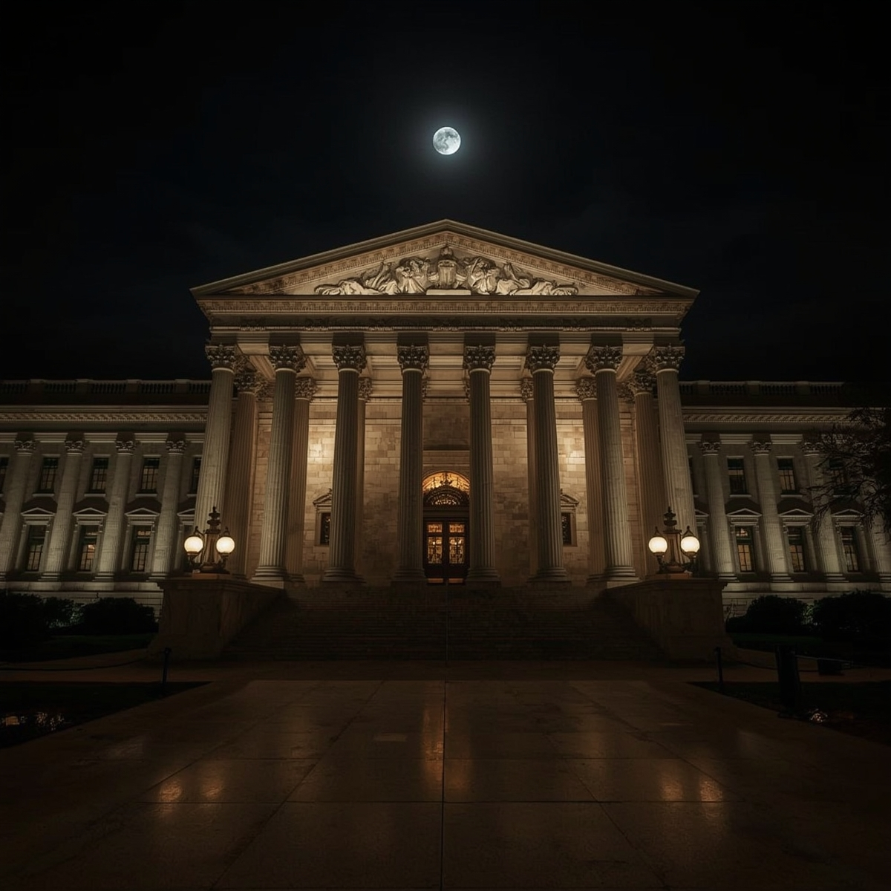

Escena 2: Infiltración nocturna
Vestido de negro, Lupin escala hasta una ventana del segundo piso. Silencio total. Al llegar a la sala 3, ve que no está solo: alguien más ya está allí, revisando un cuadro.
Vestido de negro, Lupin escala hasta una ventana del segundo piso. Silencio total. Al llegar a la sala 3, ve que no está solo: alguien más ya está allí, revisando un cuadro.